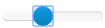
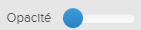

Remarque : Pour voir le graphique X3D dans une page d'accueil X3D, vous devez configurer la
page d'accueil. Pour plus d'informatioon, merci de se référer à Flatirons
Pinpoint Configuration Guide.
Les étapes ci-dessous décrivent la procédure d'ouverture et d'utilisation du clavier et de la souris pour faire pivoter, déplacer et zoomer le graphique X3D sur la page d'accueil. De plus, vous pouvez cliquer droit sur le graphique pour effectuer une recherche en texte intégral, (cachant les autres éléments), ou masquer un élément.
-
Ces options situées en haut de la page d'accueil peuvent être utilisé pour
manipuler le graphique:
Tableau 1. Le graphique options de la page d'accueil Option Description
RéinitialiserRéinitialise l'image à sa taille d'origine.  Défaut
Défaut Retourne l'image à son réglage d'affichage par défaut. La gauche Affiche le côté gauche de l'image.  Le Haut
Le Haut Affiche le haut de l'image. Le Bas Affiche le bas de l'image. La Droite Affiche le côté droit de l'image.
Objets CachésCliquez sur cette icône pour afficher l'onglet Éléments cachés. Pour fermer l'onglet, cliquez à nouveau sur l'icône. Retourner Retourne l'image à l'affichage précédent. 
ExploserExplose les éléments de l'image. Zoom Effectue un zoom avant sur l'image. 
opacitéAugmente ou diminue l'opacité pour les parties non sélectionnées de l'image X3D.